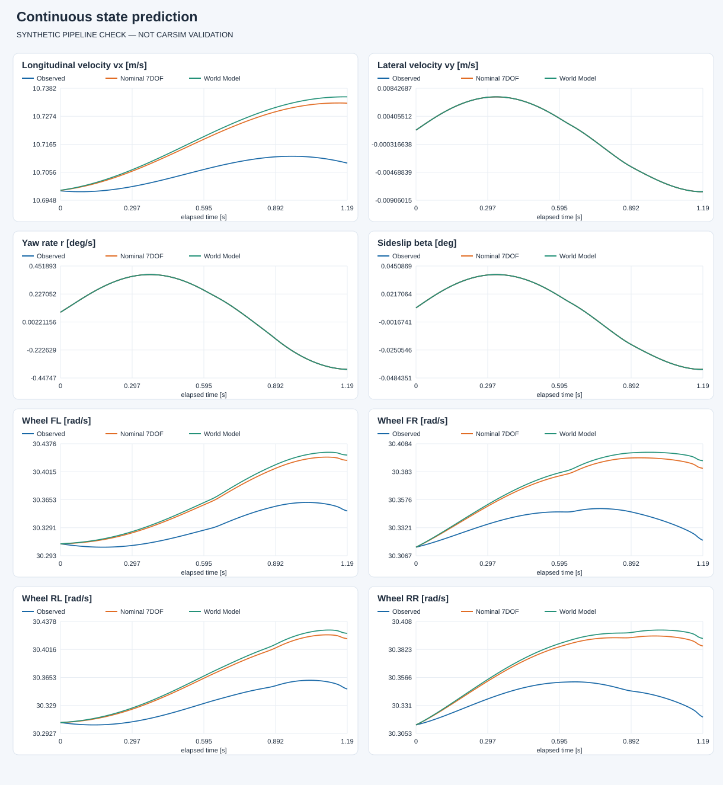
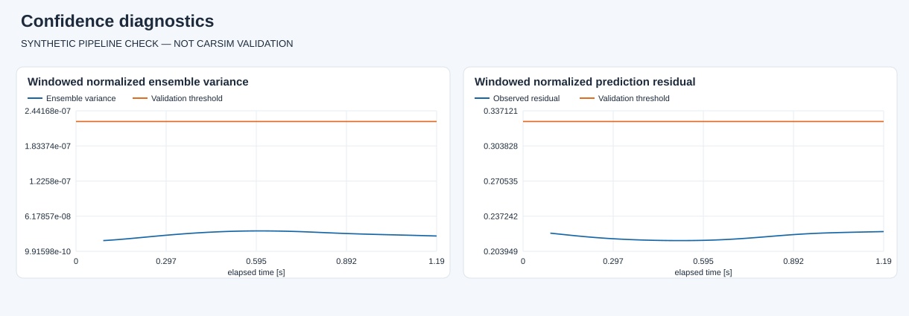

SYNTHETIC PIPELINE CHECK — NOT CARSIM VALIDATION
本报告使用合成轨迹，只验证代码流程；不能据此判断真实车辆精度或未知附着识别能力。
轨迹：synthetic_unknown_mu · 名义 μ=0.8 · 3 个 1 s 滚动窗口。完整指标见 evaluation.json。
从历史窗口结束时的共同状态出发，此后不重置状态。使用记录的实际输入，超出模型适用域时曲线停止。

残差在下一观测到达后计算；阈值来自独立名义验证集。

有效覆盖率：100.0%
| 状态 | 原 7DOF | World Model | 保持当前状态 |
|---|---|---|---|
| vx_m_s | 0.000200004 | 0.000218103 | 0.00015986 |
| vy_m_s | 5.31857e-08 | 3.79042e-07 | 0.000186892 |
| yaw_rate_rad_s | 2.20599e-08 | 8.39938e-08 | 0.000173547 |
| omega_fl_rad_s | 3.07533e-07 | 1.50207e-05 | 0.000721127 |
| omega_fr_rad_s | 3.14381e-07 | 2.13307e-05 | 0.00063164 |
| omega_rl_rad_s | 6.73437e-07 | 1.68211e-05 | 0.000694132 |
| omega_rr_rad_s | 7.02963e-07 | 1.87028e-05 | 0.000692506 |
五成员残差 MLP；历史输入不包含真实路面附着。当前未生成 SE 恢复标签、训练 Risk Network 或接管 NMPC。